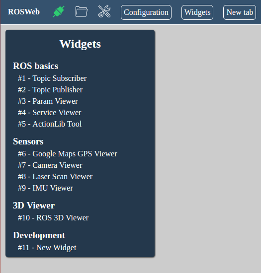
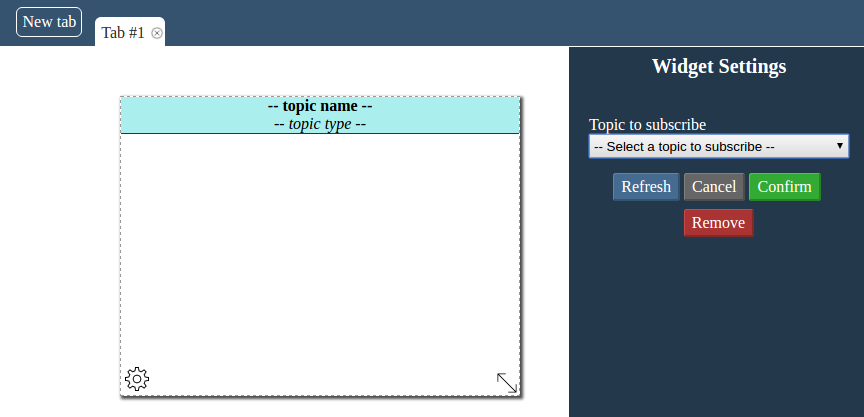

In this tutorial, we show how to create a simple widget that looks like to an existing one: the Topic Subscriber. Our goal is showing what ROSWeb offers in order to make our job of creating ROS web widgets easier.
There are two ways to be followed: Using pure JavaScript or using TypeScript. Both of them should have the same result. It is just a matter of preference. If you already have something in JavaScript, it can be easier the first way. If you want to take advantages of a typed JavaScript, the TypeScript language, the second way is your choice.
At this point, it's supposed you have the environment already configured/working. If not, please take a look at this page and follow the instructions.
First of all, we'll create our template file and a simple stylesheet. It's a HTML code in a .hbs and a
.scss files. This step is the same for JavaScript and TypeScript widgets. Let's do it inside the folder
/src/widgets/new_widget.
There are important <meta> tags that must be added to make use of the available features of ROSWeb.
Those tags can be of the following types:
For each tag in the template file, there'll be created one field to be selected or filled. For example, a ROS Topic meta tag will generate a ROS Topic field selector for the widget.
Let's start with the following files:
<div class="ros-widget" data-widget-name="new-widget"
data-min-height="150" data-min-width="200"
data-max-height="1200" data-max-width="1600"
data-height="300" data-width="400">
<!-- META Tags to describe topics subscription -->
<meta data-ros-topic="1" data-ros-topic-id="1" data-ros-topic-desc="Topic to subscribe"
data-ros-topic-type="" data-ros-topic-chng="on_topic_selected"/>
<!-- The content which could be manipulated by widget class -->
<div class="header">
<p class="name">-- topic name --</p>
<p class="type">-- topic type --</p>
</div>
<div class="content"></div>
</div>
.cssWidgetContainer[data-widget-conf='0'] {
div[data-widget-name='new-widget'] {
border: 1px solid #333;
}
}
div[data-widget-name='new-widget'] {
float: left;
height: 100%;
width: 100%;
overflow: hidden;
div.header {
background-color: #aee;
border-bottom: 1px solid #333;
p {
text-align: center;
padding: 0 10px;
}
p.name {
font-weight: bold;
}
p.type {
font-style: italic;
}
}
div.content {
padding:10px;
}
}
Important aspects about the /src/widgets/new_widget/index.hbs file:
- instead of _About the <meta> tag:
Now we already have the static content of the widget, so let's add the program that will treat the dynamic content.
ROSWeb has a pattern to help you creating a class for your widget. This pattern is described at the file /src/ts/interface/widget.ts
export interface WidgetInterface {
widgetInstanceId:number;
selector:string;
clbkCreated():void;
clbkResized():void;
clbkMoved():void;
clbkTab():void;
setSelector(): void;
}
isTab to know if it is the widget tabBased on this file, let's create our own main.js / main.ts file to describe our widget class.
var WidgetNewWidget = function (widgetInstanceId) {
// Mandatory properties
var self = this; // local variable to represent the object
this.widgetInstanceId = widgetInstanceId; // setting the ID of the widget
this.selector = ".jsWidgetContainer[data-widget-instance-id=" + self.widgetInstanceId + "]"; // setting the HTML selector
// Mandatory callback methods
this.clbkCreated = function () { };
this.clbkConfirm = function () { };
this.clbkResized = function () { };
this.clbkMoved = function () { };
this.clbkTab = function (isMyTab) { };
// Subscriptions Callbacks
this.topic1 = new ROSLIB.Topic({
ros: ros,
name: "",
messageType: ""
});
this.on_topic_selected = function (selectedTopic) {
self.topic1.unsubscribe();
self.topic1.name = selectedTopic;
var elem = $(self.selector).find(".datatopic1");
$(elem).html("");
if (selectedTopic == "") return;
ros.getTopicType(selectedTopic, function (type) {
self.topic1.messageType = type;
$(self.selector).find("p.name").html(selectedTopic);
$(self.selector).find("p.type").html(type);
self.topic1.subscribe(self.callback);
}, function (e) {
throw new Error(e);
});
};
this.callback = function (message) {
$(self.selector).find("div.content").html(JSON.stringify(message, null, 4));
}
}
At the first line: var WidgetNewWidget = function (widgetInstanceId) {, it is necessary to create
the class using the prefix Widget plus the name of the widget without - or _,
but writting the first words upper-cased.
Then, we set the mandatory properties and callbacks, as commented in the code
We create a ROSLIB Topic object, because we want to subscribe a ROS Topic with this widget. It's important to
notice that we have the freedom to use Roslib.js as we wish inside the widget. More about Roslib.js.
At the line this.on_topic_selected = function (selectedTopic) {, we create the method that will
be triggered when the user selects a topic to subscribe. In this method we subscribe the topic and set a callback
method (self.callback(message)) that will treat the messages as it comes.
In this method, we are searching for the type of the topic to show through the HTML content. We are using the
property
self.selector to replace the content of a single instance of the widget. (If you have 2 instances
of this widget, it could be a problem, without the selector)
///<reference path="../../ts/typings/tsd.d.ts" />
import { WidgetParent } from '../../ts/classmodel/widget'
declare var ros: ROSLIB.Ros;
class WidgetNewWidget extends WidgetParent {
constructor(widgetInstanceId: number) {
super(widgetInstanceId);
this.topic = new ROSLIB.Topic({ ros: ros, name: "", messageType: "" });
}
// Properties
public topic: ROSLIB.Topic;
// Mandatory callbacks
clbkCreated(): void {
}
clbkResized(): void {
}
clbkMoved(): void {
}
clbkTab(): void {
}
clbkConfirm(): void {
}
// Subscription Callbacks
public on_topic_selected(selectedTopic: string): void {
this.topic.unsubscribe();
this.topic.name = selectedTopic;
var elem = $(this.selector).find(".content");
$(elem).html("");
if (selectedTopic == "") return;
ros.getTopicType(selectedTopic, (type): void => {
this.topic.messageType = type;
$(this.selector).find("p.name").html(selectedTopic);
$(this.selector).find("p.type").html(type);
this.topic.subscribe(this.callback);
}, (e): void => {
throw new Error(e);
});
}
callback = (message: any): void => {
$(this.selector).find("div.content").html(JSON.stringify(message, null, 4));
}
}
window["WidgetNewWidget"] = WidgetNewWidget;
First of all, we need to reference all JavaScript libraries definitions: ///<reference path="../../ts/typings/tsd.d.ts" />.
Then, we are able to use Handlebars, jQuery and ROSLib inside our widget class.
We need also to import the interface that we are goind to extend: import { WidgetParent } from '../../ts/classmodel/widget'
Then we define our class: class WidgetNewWidget extends WidgetParent {, it is necessary to create
the class using the prefix Widget plus the name of the widget without - or _ and writting the first words upper-cased.
At the constructor, we call the parent construct to set some variables, like widgetInstanceId and
selector. We also defines a topic object to handle a ROS subscription.
After the mandatory callbacks, we define a method to handle the topic selection change: public on_topic_selected(selectedTopic: string): void {
It's important to notice that: For the methods that needs a callback, like ros.getTopicType and
this.topic.subscribe, we use Arrow Functions, to avoid losing this object, that is our instance reference.
Finally, at the end of the final, after the class declaration, we set the class globally: window["WidgetNewWidget"] = WidgetNewWidget;.
Now that we have the the 3 necessary files for a widget, let's see it working.
Before doing that, we need to add our widget to the /src/ts/model/workspace.ts file. At the end of the
method _initWorkspace, add the following:
wg = new WidgetGroup("Development");
new Widget(wg.id, "New Widget", "NewWidget", "./widgets/new_widget
At your terminal, inside rosweb project folder, run gulp.
Open another terminal and run gulp watch, so future changes will be compiled and the application will
be reloaded.
Launch Rosbridge Websocket Server (roslaunch rosbridge_server rosbridge_websocket.launch)
Open the application at the browser (http://localhost:8000)
Your widget must be shown at the bottom of widgets menu:
Click on your widget to create one of it. You should see something like the image below:
At the widget settings, on the right, you may see the topic selector with the description we set on the template file.
Select any topic and its messages will be updated at the widget div.content element.
Your browser will be your best debug tool. Google Chrome has been used from the beggining for the development of ROSWeb.
In this project, no console message was disabled, so all JavaScript and TypeScript errors and warnings can be seen at the browser console.
This page is generated by a GitHub repository, you can submit changes here or even create an Issue and we'll fix it as soon as possible!
ROSWeb Page Repository